CH 1.2 – Graphs of Functions
Interval Notation
We are briefly going to visit intervals and interval notation. Both of these should be a previously learned topic; however, if not, here is a brief overview or reminder of what it is.
Interval Notation is a form of writing in mathematics that helps to eliminate words out of answers. Interval notation allows us to take a numerical interval such as \(-3 < x \leq 5\) and write it as \((-3, 5]\). In this type of notation, different types of brackets have different meanings. Hopefully, the table below will help to outline those for you.
![Table of interval notation with three columns: Set Notation, Interval Notation, and Graphical. Eight rows cover all combinations of open and closed endpoints and infinite rays. Row 1: open interval (a,b), both endpoints open circles on a number line. Row 2: half-open [a,b), left endpoint filled, right open. Row 3: half-open (a,b], left open, right filled. Row 4: closed [a,b], both endpoints filled. Row 5: (-infinity, b), ray extending left with open circle at b. Row 6: (-infinity, b], ray extending left with filled circle at b. Row 7: (a, infinity), ray extending right with open circle at a. Row 8: [a, infinity), ray extending right with filled circle at a. All number-line segments are drawn in blue.](images/1_2_1.png)
One thing to note that is important is that \(-\infty\) and \(\infty\) always use open brackets, since they are values you will never be able to reach.
Occasionally with interval notation, we need to break the interval up, or use more than one interval. See the examples below to see how that may look.
![Table with two rows showing union interval notation examples. Row 1: A number line with two rays going left from a filled dot at a and right from a filled dot at b, written as (-infinity, a] union [b, infinity). A note explains that the union symbol means it can be either interval or both. Row 2: A number line showing the entire real line except for an open circle (hole) at b, written as (-infinity, b) union (b, infinity). A note explains this represents all values except b, indicated by round brackets.](images/1_2_2.png)
Now that we have briefly gone over the basics of writing intervals, we are going to move into where we are going to use them. They really are a useful tool when it comes to writing the domain and range of a function.
Graphs of Functions
In the first section we looked at how to write the domain and range of functions and relations when given to us in list-type formats. In this section we are going to discuss identifying the domain and range from graphs of relations and functions.
Allow us to look at the graph of a function \(f(x)\) drawn below:
![Coordinate plane showing the graph of a piecewise function f(x). The graph begins with a filled blue dot at (-3, -2), curves upward to an open circle at (-1, 1), then continues as a horizontal segment from an open circle at (-1, 1) to a filled dot at (2, 1), then rises with an arrow extending toward the upper right. Vertical dashed green lines at x equals negative 3 and x equals 5 indicate the extent of the domain, labeled 'Domain'. Horizontal dashed red lines at y equals negative 2 and y equals 5 indicate the extent of the range, labeled 'Range'.](images/1_2_3.png)
From looking at the above graph we can see that the domain and range for this function are not as simple as listing a set of numbers. This is where our interval notation comes in handy. Recall that the domain is the set of all the \(x\)-values. As can be seen, \(x\) can take on a number of different values in this graph — and not just whole values either.
To identify the domain of this function we need to look at the blue line and assess where it starts and where it ends. From looking at the graph we can see that this graph begins at \(x = -3\) and it ends at \(x = 5\). However, we need to be careful with that ending point because there is an arrow, which means that it keeps going indefinitely — it is approaching \(\infty\). Additionally, we need to identify that at \(x = -1\) there is a hole in the graph, meaning that the function does not exist there. This means that our interval will be a union of multiple intervals. After looking at all of that, our domain for this function would be \([-3,-1)\cup(-1,\infty)\). Remember these are not points — they are strictly \(x\)-values.
To identify the range of this function we take a very similar approach, but instead of looking at the \(x\)-values we are looking at the \(y\)-values. Looking at the \(y\)-values of this function, we can see that the lowest \(y\)-value on our graph is \(y = -2\) and the largest \(y\)-value keeps growing without bound because there is an arrow — meaning it goes on forever. It is important to note that even though there is a hole at \(y = 1\), there are also other \(y\)-values that equal \(1\), which means that when it comes to our range, we still include this value in our interval. This would make our range \([-2, \infty)\).
A Couple of Important Things to Mention About Intervals
- Make sure the interval goes from least to greatest.
- Intervals never use coordinate pairs \((x, y)\); instead, they always go from one number to the next number.
- Remember to never put a square bracket with \(-\infty\) or \(\infty\).
Using Graphs to Find Function Values
In the previous section we discussed how to evaluate a function at a given value algebraically. However, we don't always have an actual algebraic function to pull values from. In this case we can do so by using the graph of a function. Let's look back at the graph below:
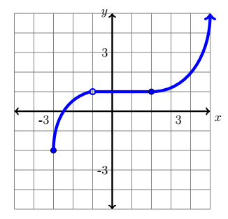
To find function values from a graph, we simply look at the values on the graph.
Example
Using the function above, find the following function values:
a.) \(f(3)\) b.) \(f(-2)\) c.) \(f(x) = 2\)
Solution
a.) If we were looking at the graph, we'd go over to where \(x = 3\) and go up or down to meet the graph of the function, then identify that \(y\)-value. That means \(f(3) \approx 1.2\).
b.) We would do the same thing as above. On the graph, go over to where \(x = -2\) and identify the \(y\)-value of the function at that point. Hence, \(f(-2) \approx 0.5\).
c.) This one is a bit different. Notice how in this notation we are not looking for the \(y\)-value when the \(x\)-value is given. In this case we are looking for the \(x\)-value when the \(y\)-value is given. This means we go to where \(y = 2\) on the graph and identify the \(x\)-value of the function. Looking at the graph we can see that when \(y = 2\), \(x = 4\). Therefore we can write our answer as \(f(4) = 2\).
The Vertical Line Test
Previously in this chapter it was discussed what makes a relation a function. Another way to determine if a relation is a function graphically is by use of the vertical line test.
Vertical Line Test
If a vertical line does not pass through the graph of an equation in more than one spot, then the equation \(y\) is a function of \(x\).
Example
Using the vertical line test, determine if each graph below demonstrates that \(y\) is a function of \(x\).
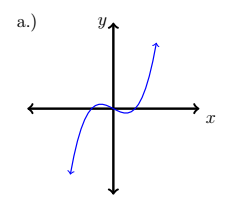
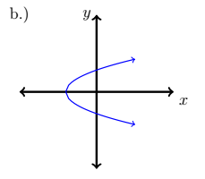
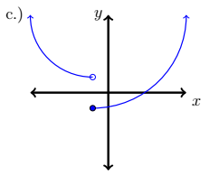
Solution
a.) This graph is a function. No matter where you drew a vertical line on this graph, there is no place it would touch more than once.
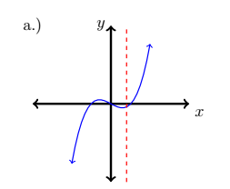
b.) This graph is not a function of \(x\). This can be determined because, as you can see below, a vertical line passes through this graph in multiple places.
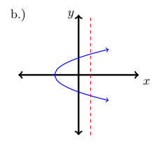
c.) This graph is a function of \(x\). Even though it looks like the line passes through the graph in two places, we have to keep in mind that one of them is a hole, which means that the vertical line goes through it like the eye on a fish hook.
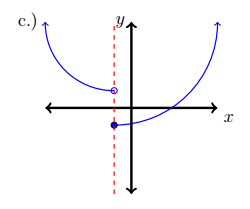
Solving Functions & Zeros
We are learning everything there is to know about relations and functions in this chapter. We've already discussed a number of things that functions and relations have, such as a domain and range. Another important aspect of a relation or function is its zero(s). The zero of a function is the point at which the graph crosses the \(x\)-axis. Other names for a zero can include, but are not limited to, solutions and \(x\)-intercepts.
Zeros of a Function
The zeros of a function are the \(x\)-values for which \(f(x) = 0\). The zero(s) are a set of numbers in which you only list the \(x\)-values. By making it into a coordinate such as \((a, 0)\) you are changing it into an \(x\)-intercept.
Finding Zeros Algebraically
When you are trying to find the zero of a function algebraically, you replace \(f(x)\) with 0 and then solve the equation for \(x\).
Example
Find the zeros of the functions below algebraically.
a.) \(f(x) = 3x + 4\) b.) \(g(x) = \sqrt{-5 + x^2}\) c.) \(h(t) = t^2 + 5t + 6\)
Solution
a.) To find the solution, replace \(f(x)\) with 0 and then solve for \(x\).
\[ \begin{array}{rcl} \color{red}{0} &=& 3x + 4 \\[4pt] -4 &=& 3x \\[4pt] -\dfrac{4}{3} &=& x \end{array} \]b.) Once again, replace \(g(x)\) with 0 and then solve for \(x\).
\[ \begin{array}{rcl} \color{red}{0} &=& \sqrt{-5 + x^2} \\[4pt] 0^2 &=& \left(\sqrt{-5 + x^2}\right)^2 \\[4pt] 0 &=& -5 + x^2 \\[4pt] 5 &=& x^2 \\[4pt] \sqrt{5} &=& \sqrt{x^2} \\[4pt] \pm\sqrt{5} &=& x \end{array} \]c.) Once again, replace \(h(t)\) with 0 and then solve for \(t\).
\[ \begin{array}{rcl} \color{red}{0} &=& t^2 + 5t + 6 \\[4pt] 0 &=& (t+3)(t+2) \\[4pt] t + 3 = 0 &\Rightarrow& t = -3 \\[4pt] t + 2 = 0 &\Rightarrow& t = -2 \end{array} \]The solution set is \(\{-3,\ -2\}\).
Finding Zeros Graphically
To find the zeros of a function graphically, it is as simple as looking at the graph and finding the \(x\)-value where it crosses through or touches the \(x\)-axis.
Example
Find the zero(s) in the function below.
![Coordinate plane with axes labeled x and y, tick marks at integers from -4 to 4 on each axis. A blue piecewise function is drawn: one branch starts with an arrow going up and to the left, crosses the x-axis at approximately x equals negative 13 over 3, passes through a local minimum below the x-axis, and meets a filled dot at approximately (-3, -3). A second branch forms a horizontal segment at y equals 2 from x equals 0 to just before x equals 2 (open circle at x equals 2), then the graph continues to the right with an arrow going downward, crossing the x-axis at approximately x equals 3. The graph also crosses the x-axis at approximately x equals negative 3 over 2.](images/1_2_11.png)
Solution
As we can see in the graph, the function crosses the \(x\)-axis in three spots. That means that our zeros are \(x = -\dfrac{13}{3}\), \(x = -\dfrac{3}{2}\), and \(x = 3\). If we were writing this as a set it would be \(\left\{-\dfrac{13}{3},\ -\dfrac{3}{2},\ 3\right\}\).
Increasing, Decreasing, & Constant
There is much more to a graph of a function than just its zeros, domain, and range. It is important to know when the function is increasing, decreasing, or constant. Remember, whenever we are analyzing graphs we always move from left to right.
Increasing, Decreasing, and Constant Functions
A function \(f\) is said to be increasing if, as the function moves left to right, the first \(y\)-value is smaller than the second \(y\)-value.
A function \(f\) is said to be decreasing if, as the function moves left to right, the first \(y\)-value is larger than the second \(y\)-value.
A function \(f\) is said to be constant if, as the function moves left to right, the \(y\)-value stays the same.
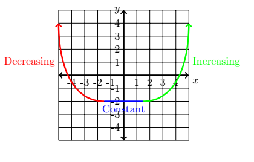
Example
Determine the open intervals over which the following are increasing, decreasing, and constant.
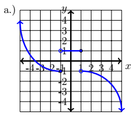
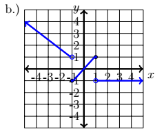
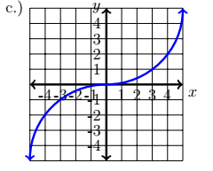
Solution
a.) If we were to take the graph and highlight its parts — with red being decreasing, blue being constant, and green being increasing — our graph would look something like:
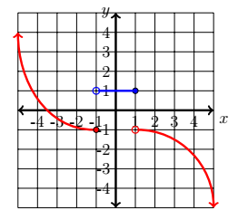
If we notice, this graph has no areas of increasing, so we have no interval for increasing. Our open interval of decreasing would be \((-\infty, -1) \cup (1, \infty)\). Our interval over which the equation is constant would be \((-1, 1)\).
b.) If we were to take the graph and highlight its parts — with red being decreasing, blue being constant, and green being increasing — our graph would look something like:
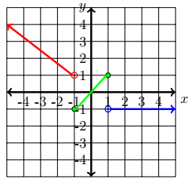
This graph has all three types of behavior. The interval at which this function is increasing is \((-1, 1)\). The interval in which it is decreasing is \((-\infty, -1)\). Lastly, the interval in which it is constant is \((1, \infty)\).
c.) If we were to take the graph and highlight its parts — with red being decreasing, blue being constant, and green being increasing — our graph would look something like:
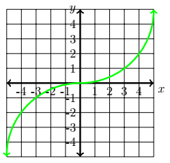
This function is increasing throughout its entire domain. That means our interval is \((-\infty, \infty)\).
Remember: intervals are never coordinates — they are always just the \(x\)-values.
Maximum & Minimum Values of a Function
I think it is safe to say that almost everyone knows what a maximum and a minimum are. But what about a relative minimum and a relative maximum?
Relative Minimum and Relative Maximum
A function has a relative minimum if there exists some interval \((a, b)\) that contains the lowest point in that interval. It is important to note that it does not have to be the lowest point on the whole graph, just the lowest point in a given interval.
A function has a relative maximum if there exists some interval \((a, b)\) that contains the highest point in that interval. It is important to note that it does not have to be the highest point on the whole graph, just the highest point in a given interval.
Graphs of functions can have neither a relative minimum nor a relative maximum, and they can also have multiple relative minima and/or maxima.
Looking at the graph below we can see that there are two relative maximums and two relative minimums.

The absolute maximum and the absolute minimum are also located in the graph, but instead of being the highest or lowest point in an interval, they are the highest and lowest point, respectively, of the entire graph. Using the graph above as an example, point \(a\) would be the absolute minimum and point \(d\) would be the absolute maximum.
Even and Odd Functions
The last thing we are going to discuss in this section is a type of symmetry that a function may have. When a function is symmetric with the \(y\)-axis — meaning that you can fold it in half "hot dog" style and what is on the left is the same as what is on the right — we call that function even. When a function is symmetric with the origin, we call that function odd.
Even and Odd Functions
An even function graphically will have both ends going the same direction. Algebraically we say that if \(f(x) = f(-x)\), then the function is even.
An odd function graphically will have its ends going in opposite directions. Algebraically we say that if \(f(-x) = -f(x)\), then the function is odd.
Example
Algebraically identify whether each function below is even, odd, or neither.
a.) \(g(x) = x^3 + x\) b.) \(h(t) = t^2 - 1\) c.) \(f(s) = s^2 + 3s - 10\)
Solution
a.)
Test for Even: show \(g(x) = g(-x)\)
\[ \begin{array}{rcl} x^3 + x &=& (-x)^3 + (-x) \\[4pt] x^3 + x &\neq& -x^3 - x \end{array} \]Since the two sides do not match, this function is not even.
Test for Odd: show \(g(-x) = -g(x)\)
\[ \begin{array}{rcl} (-x)^3 + (-x) &=& -(x^3 + x) \\[4pt] -x^3 - x &=& -x^3 - x \end{array} \]Since the two sides match, this function is odd.
b.)
Test for Even: show \(h(t) = h(-t)\)
\[ \begin{array}{rcl} t^2 - 1 &=& (-t)^2 - 1 \\[4pt] t^2 - 1 &=& t^2 - 1 \end{array} \]Since the two sides match, this function is even.
Test for Odd: show \(h(-t) = -h(t)\)
\[ \begin{array}{rcl} (-t)^2 - 1 &=& -(t^2 - 1) \\[4pt] t^2 - 1 &\neq& -t^2 + 1 \end{array} \]Since the two sides do not match, this function is not odd.
c.)
Test for Even: show \(f(s) = f(-s)\)
\[ \begin{array}{rcl} s^2 + 3s - 10 &=& (-s)^2 + 3(-s) - 10 \\[4pt] s^2 + 3s - 10 &\neq& s^2 - 3s - 10 \end{array} \]Since the two sides do not match, this function is not even.
Test for Odd: show \(f(-s) = -f(s)\)
\[ \begin{array}{rcl} (-s)^2 + 3(-s) - 10 &=& -(s^2 + 3s - 10) \\[4pt] s^2 - 3s - 10 &\neq& -s^2 - 3s + 10 \end{array} \]Since the two sides do not match, this function is not odd. That means this function is neither odd nor even. If you were to look at it graphically, both ends go up — but it is not symmetric with the \(y\)-axis.
Looking at the graphs below we can see the different types of symmetry.


![Graph c.) showing the function f(s) equals s squared plus 3s minus 10 on a larger coordinate plane with axes going from -8 to 8. The parabola opens upward with both ends pointing up, but is shifted to the left of the y-axis so it is not symmetric about it. An annotation to the right reads: 'Looking at the graph since both ends go the same direction, you may suspect that the graph is even. However, if you notice, when you fold this graph along the y-axis, it is not the same on the left as it is on the right. Therefore this graph has neither symmetry.' Labeled 'c.)' in the upper left.](images/1_2_22.png)
Exercises
Exercises to be added at a later date.